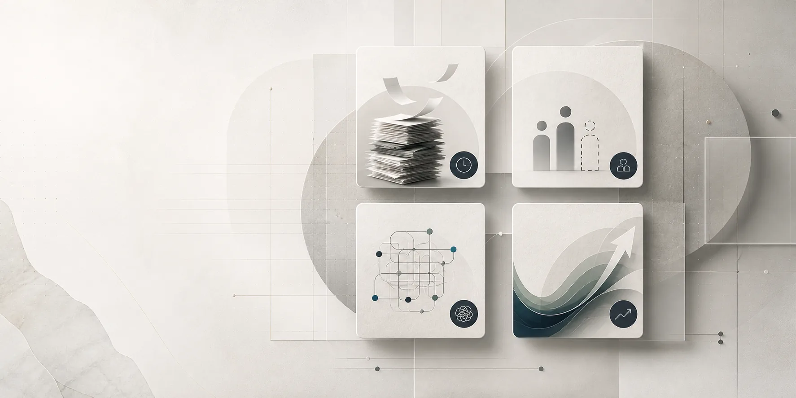
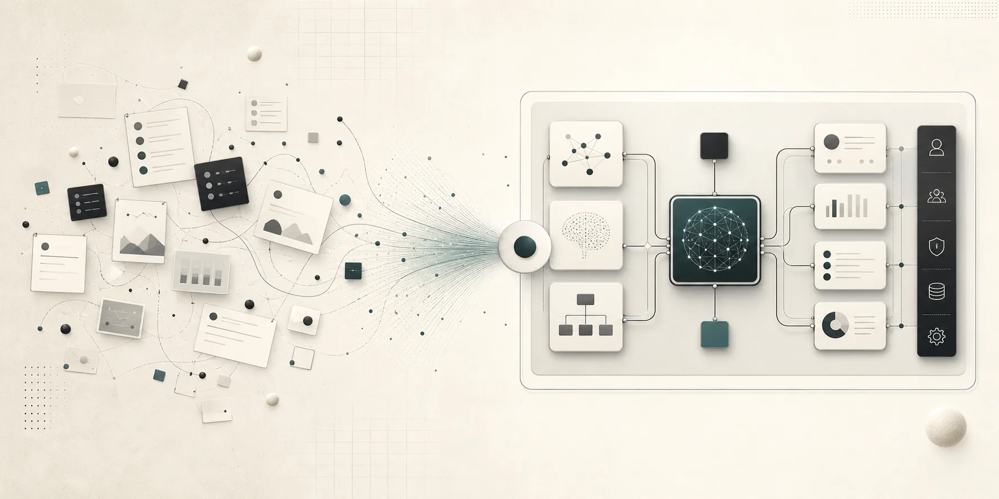
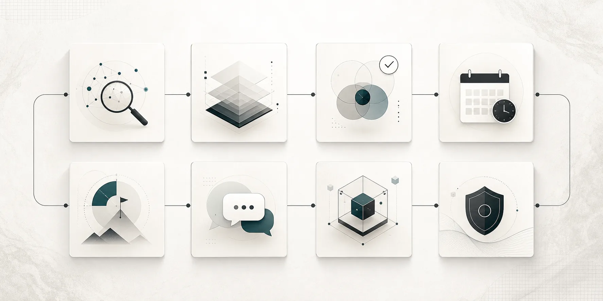
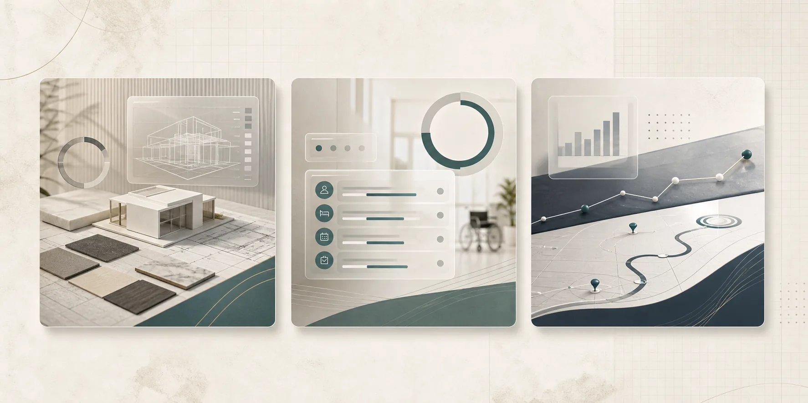
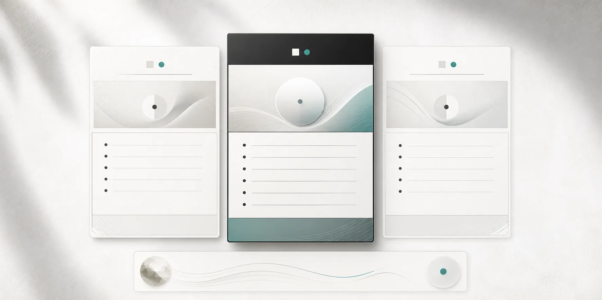
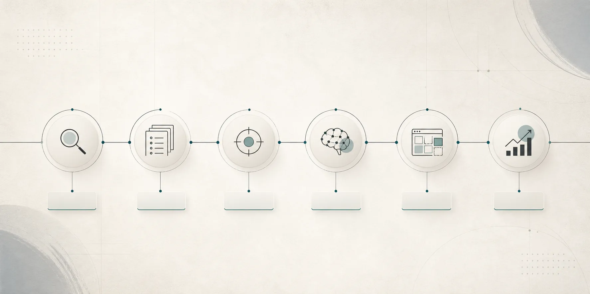

社員を増やさず、
AIを社内の仕組みにする。
中小企業の業務を棚卸しし、AIを活用する場面を選定。導入して終わりではなく、社員だけで回せる内製化体制の構築まで伴走します。
AIを使うべきなのは分かっている。
でも、何から始めればいいか分からない。
- 業務効率化したいが、日々の対応で手が回らない
- 社員を増やす余裕がなく、今の人数で回す必要がある
- AI活用に乗り遅れないようにしたい
- 「忙しいから抜け出せない」状態を仕組みで変えたい

AIツールを教えるだけではなく、
業務に残る仕組みをつくる。
一般的なツール紹介やSaaS提案で終わらせず、貴社の業務フローに合わせてAI環境を設計します。目指すのは、外部任せではなく社内で運用できる状態です。
ツール導入
目的に合わせて、使うべきAIを見極めます。
業務フロー設計
現場の流れに合わせて活用場面を整理します。
仕組み化
毎日の業務で使える形に落とし込みます。
内製化
社員だけで回せる体制づくりを支援します。

現状把握から運用改善まで、
継続的に伴走します。
現状ヒアリング
まずは業務の流れと課題を把握します。
業務の棚卸し
属人化している作業や繰り返し業務を整理します。
活用場面の選定
AIを入れるべき場所と優先順位を決めます。
定例打ち合わせ
毎週の訪問またはオンラインで前進を支えます。
月末戦略会議
翌月以降の方針を整理し、改善を続けます。
チャット相談
運用中の疑問をいつでも相談できます。
専用ツール開発
業務に完全特化したAI導入システムを構築します。
保守運用
導入後の調整や改善にも対応します。

一般的なAI支援で
終わらせない。
- AIツールを紹介する
- SaaSを提案する
- 使い方を教えて終わる
- 業務フローを分析する
- 貴社専用のAI環境を構築する
- 仕組み化・内製化まで伴走する
現場に合わせたAI活用で、
業務の進め方そのものを変える。
建築設計事務所
プレゼン用素材作成、関連法規の調査、提案資料作成までの時間を80%削減。コストもほぼゼロに。
福祉施設
入居者管理やスタッフの勤怠管理などの事務作業を、一人で回せるように仕組み化。
コンサルティング会社
問い合わせ分析、課題発見、経営方針作成、ロードマップ作成にかかる手間を自動化。

貴社の予算と内製化範囲に合わせて、
柔軟に設計します。
月額顧問
15万〜30万円
ツール開発
10万〜50万円
保守運用
1万〜5万円
最低契約期間は3か月です。業務量、内製化したい範囲、開発内容に応じて個別にお見積りします。

初回相談から、
社内に残る仕組みづくりへ。
- 初回無料相談
- 業務棚卸し
- AI活用ポイントの整理
- プラン設計
- 導入・運用開始
- 月次戦略会議で改善

よくある質問
AIを使ったことがなくても大丈夫ですか？
はい。現状の理解度に合わせて、業務の棚卸しから一緒に進めます。
社員が少なくても利用できますか？
はい。少人数でも回る仕組みづくりを重視して設計します。
セキュリティ面は大丈夫ですか？
情報の扱いに配慮し、業務内容に合わせて利用範囲や運用方法を設計します。
全国対応できますか？
はい。訪問・オンラインのどちらにも対応可能です。
専用ツールの開発も可能ですか？
はい。クライアントの業務に特化したAI導入システムを構築できます。
まずは、貴社の業務のどこにAIを使えるか。
一緒に見つけるところから始めませんか。
初回相談では、現在の業務を伺いながら、AI活用の可能性と優先順位を整理します。